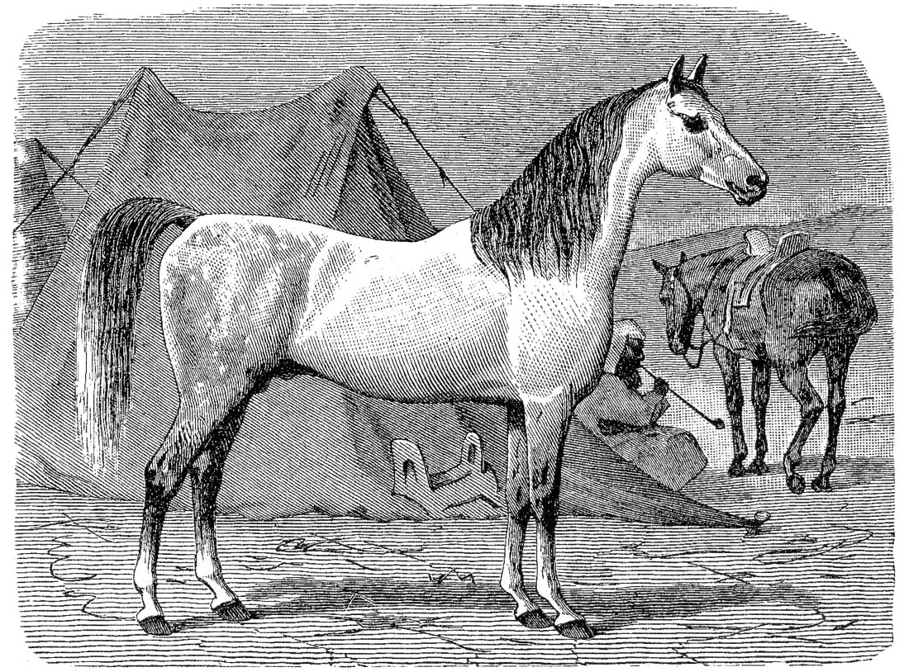

{kind=link}
def halts(f):
# false, если программа зависает
# . . .
def g():
if halts(g):
while(True):
passНепрерывный статический анализ
План
Ограничения и возможности.
Роль и место в конвейере поставки.
Внедрение в legacy-проект.
What it is and what it is not
Wikipedia: «Анализ программного обеспечения, производимый без реального выполнения исследуемых программ».
Здравый смысл: Любая проверка исходного кода, не требующая написания тестов.
Продавцы статанализаторов:
Наш СА лучше вашего!
Чего в принципе не может СА?
Чего в принципе не может СА?
Зависнет или остановится?
Теорема Райса
Вычисляет ли функция квадрат числа?
def is_a_squaring_function(f):
# true, если функция вычисляет квадрат
# . . .
def halts(f):
def t(n):
f()
return n * n
return is_a_squaring_function(t)Статанализ не найдёт
Все
Null Pointer Exception(если нет Null Safety в языке)Все
Attribute Not Found Exception(если динамическая типизация)
…не говоря уж о менее тривиальных вещах.
Не волшебный единорог!
Обыкновенная лошадь

Источник: Энциклопедия Брокгауза и Ефрона
{kind=link}
Разнообразие средств статанализа
Проверка стиля кодирования (checkstyle, flake8)
Поиск характерных ошибок в коде (spotbugs, PVS-Studio)
Проверка валидности ресурсных файлов (xmllint, YAMLlint, JSONLint)
Компиляция/парсинг (
ansible --syntax-check,terraform validate)Предупреждения компиляторов
Проверка правописания
Конфигурационные тесты
Что из этого использовать?
Всё!
Как это всё использовать?
Однократное применение анализа бессмысленно
Анализ должен производиться непрерывно и автоматически
Результаты анализа должны определять quality gates
Роль и место СА в конвейере поставки
Continuous Delivery Book
 | Jez Humble, David Farley. Continuous Delivery: Reliable Software Releases through Build, Test, and Deployment Automation. Addison-Wesley, 2011 |
Типовой конвейер сборки
Типовой конвейер сборки
«Фильтрующая способность»
Типовой конвейер сборки
Сложность, стоимость,
время работы, вероятность сбоя
Пирамида Тестирования

Источник: Martin Fowler, Test Pyramid
Многоступенчатый фильтр
Источник: Wikimedia Commons
{kind=link}
Многоступенчатый фильтр
Размер пропускаемого загрязнения
Пропускная способность
Многоступенчатый фильтр
Сложность, стоимость
Вывод
Статанализ — «грязевик» в начале цепочки фильтров
В отдельности от других — не работает
Случай из практики: долгий отклик
resource.json
{
"key": "value with "unescaped quotes" "
}Все UI тесты падают.
Но это происходит спустя дни.
Случай из практики: лечение
Добавляем JSONLint в начало пути
find . -name \\*.json -print0 | xargs -0 -n1 -t jsonlint -qУбеждаемся, что отклик на проблему идёт сразу
PROFIT
Внедрение в legacy-проект
Внедрение в legacy-проект
Знакомая картина?

Оставить нельзя пофиксить!
Пороговое значение находок
«Если меньше 100 находок, то код ОК»
ДАНО: в коде 90 находок и код ОК.
Добавляем Null Pointer Dereference.
У нас 91 находка, код всё ещё ОК?
Вывод: не используйте данный метод!
Старые — в игнор, новые не пускаем
Создаём suppression profile
Не пропускаем находки за пределами suppression
Но реализовать это сложно!
Вывод: метод хорош, но труднодоступен
Проверка правописания
Quality Gate: не должно быть незнакомых спелчекеру слов.
Запускайте aspell в не-интерактивном режиме
Храните пользовательский словарь в проекте
Проверка правописания
Проверка документации:
for f in $(find . -name '*.adoc'); do \
cat $f | aspell --master=ru --personal=./dict list; done \
| sort | uniqПроверка литералов и комментариев:
for f in $(find . -name '*.java'); do \
cat $f \
| aspell --mode=ccpp --master=ru --personal=./dict list; done\
| sort | uniqУпавшая проверка

Храповик
Штука, позволяющая движение
только в нужную сторону

Принцип работы
Принцип работы
Упавшая проверка

Принцип работы
Принцип работы
Много модулей/инструментов
Вид метаданных:
# warnings.yml
celesta-sql:
checkstyle: 434
spotbugs: 45
celesta-core:
checkstyle: 206
spotbugs: 13
celesta-maven-plugin:
checkstyle: 19
spotbugs: 0
celesta-unit:
checkstyle: 0
spotbugs: 0Упавшая проверка
Как это реализовано у нас
Jenkins scripted pipeline
Jenkins shared libraries in Groovy
JFrog Artifactory для хранения метаданных о сборках
Jenkins Warnings NG Plugin
Собирает и читает отчёты всех известных анализаторов
def checkstyle
= scanForIssues tool: checkStyle(pattern: '**/cs.xml')
publishIssues issues: [checkstyle]
def spotbugs
= scanForIssues tool: spotBugs(pattern: '**/spotbugs.xml')
publishIssues issues: [spotbugs]
def eslint
= scanForIssues tool: esLint(pattern: '**/eslint.xml')
publishIssues issues: [eslint]
. . .Jenkins Warnings NG Plugin
Красиво отображает
Jenkins Warnings NG Plugin
Можно программировать Quality Gates, в т. ч. в виде разницы с reference build:
recordIssues tool: java(pattern: '*.log'),
qualityGates: [[threshold: 1, type: 'TOTAL',
unstable: true]]Храповик: работа за полгода

Checkstyle warnings, Celesta project
Случай из практики
Кто здесь видит проблему?
#.travis.yml
. . .
install:
- pip install yamllint
- pip install ansible-lint
script:
. . .
# Check YAML validity
- yamllint -c yamllint.yml .
# Ansible code static analysis
- ansible-lint . . .
- ansible-lint . . .
- ansible-lint . . .Невоспроизводимый билд
Фиксируем версии всего!
#.travis.yml
. . .
install:
- pip install yamllint==1.13.0
- pip install ansible-lint==3.5.1Выводы
Статический анализ многолик
Статический анализ бесполезен при нерегулярном применении
Внедряйте анализ в качестве первого звена конвейера интеграции
Устанавливайте quality gates. Используйте метод храповика
Не забывайте про воспроизводимость сборок
Ссылки
Humble, Jez; Farley, David (2011). Continuous Delivery: reliable software releases through build, test, and deployment automation.
Иван Пономарев Внедряйте статический анализ в процесс, а не ищите с его помощью баги
Алексей Кудрявцев Анализ программ: как понять, что ты хороший программист
На этом всё!
@inponomarev
Спасибо!